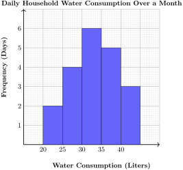
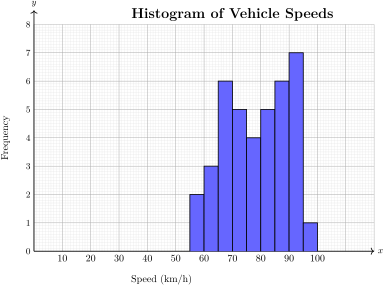
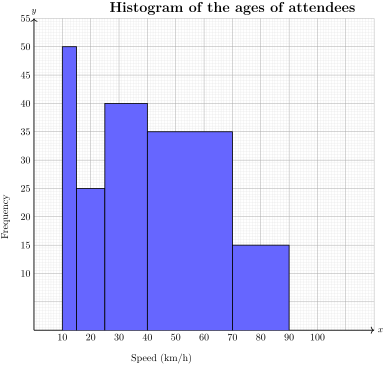
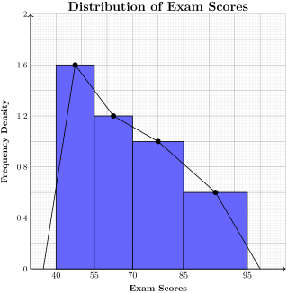

Statistics is a branch of mathematics that involves collecting, organizing, analyzing, interpreting, and presenting data.
Subsection3.1.1Collection of data
Data refers to raw facts, figures, or information collected for analysis, reference, or decision-making.
Data collection is the process of gathering information for analysis, interpretation, and decision-making.
Subsubsection3.1.1.1Sources of data
Data can be obtained from two main sources:
\(\textbf{Primary Data Sources}\)
These are first-hand data collected directly by an individual or organization for a specific purpose.
For examples:
Conducting surveys
Interviews with individuals or groups
Experiments and observations
Group discussions
\(\textbf{Secondary Data Sources}\)
These are data that have already been collected and recorded by others for a different purpose.
For examples:
Government reports (e.g., census data)
Research articles and journals
Newspapers and magazines
Online databases and records
\(\textbf{Tertiary}\)
These are sources that compile and summarize information from primary and secondary sources.
For examples:
Dictionaries
Textbooks
Encyclopedias (e.g., Wikipedia)
Activity3.1.1.
Work in groups
Form groups of 3-5 students.
Collect data from both primary and secondary sources based on the topic.
The Most Popular Mode of Transport in Our Community.
Primary Data Collection:
Conduct a short survey by asking at least 10 people what mode of transport they use most often (e.g., walking, bicycles, motorcycles, public buses, private cars).
Record their responses in a table.
Secondary Data Collection:
Find information from newspapers, government reports, or websites about transport statistics in Kenya.
Compare the findings from both sources.
Present your results in a short report or class discussion.
Learning point
Sources of data are where information comes from. First-hand data is collected directly, while second-hand data comes from existing records.
Example3.1.1.
Classify the Following as Primary or Secondary Data Sources:
A student conducts a survey to find out the favorite sports of their classmates.
A teacher uses last year’s national exam results to analyze student performance trends.
A researcher reads a government report on the most common diseases in Kenya.
A doctor observes a patient’s symptoms and records them for a medical study.
A scientist conducts an experiment to test the growth rate of plants under different conditions.
Solution.
Primary because the student is collecting firsthand data directly from people.
Secondary because the exam results were already collected and recorded by an external body.
Secondary because The report was collected and published by someone else for a different purpose.
Primary because The doctor is directly collecting new data from real-life observation.
Primary because The scientist is generating new data through an experiment.
Example3.1.2.
A community group wants to understand the needs of youth in their area.
What primary data collection methods could the group use?
What problems might they have when trying to find this information?
How can they use the information they find to help the community?
What secondary data sources could be useful to this community group?
Solution.
Focus groups, surveys, interviews.
Overcoming language barriers.
Getting honest responses.
They can start new programs for young people.
They can tell leaders what young people need.
Academic studies on youth issues.
Government reports on youth.
ExercisesExercises
1.
The Kenya National Bureau of Statistics (KNBS) is a good source of:
Primary data
Secondary data
Both primary and secondary data
Neither primary nor secondary data
2.
A researcher observes how teachers and students interact in a classroom for a study on teaching methods. Is this a primary or secondary data source, and why?
3.
Grade \(10\) students from Korinyang Primary School went to Lake Nakuru National Park and counted the flamingos they saw for their Biology project.
Is this a primary or secondary data source?
Give reason.
4.
In a market, a shop owner watches what customers buy most often and looks for trends based on what they see in the store.
which sources of data can the shop owner use to collect the data?
5.
Give one example of how you could collect primary data in your local community.
6.
Define the following terms.
Data Source
Raw Data
Tertiary Sources
Primary sources
7.
What are the advantages of using secondary data over primary data in some research situations?
Subsubsection3.1.1.2Methods of data collection
Different methods are used depending on the type of data needed:
Interviews
A face-to-face or online conversation where the researcher asks specific questions.
Can be structured (fixed questions) or unstructured (flexible discussion).
Used in opinion polls, job research, and investigations.
Questionnaires
A set of written questions distributed to respondents.
Can be open-ended (detailed responses) or closed-ended (fixed choices).
Used in market research, academic studies, and social surveys.
Experiments
Data obtained by conducting controlled tests.
Used in laboratories, product testing, and medical research.
Observations
Data collected by watching and recording behaviors, events, or conditions.
Can be direct (watching people’s actions) or indirect (using cameras, sensors, or recorded data).
Used in scientific studies, security monitoring, and behavioral research.
Activity3.1.2.
Work in groups
The following data represents the number of hours people spend watching television per week.
\(0 - 5\) hours: \(20\) people
\(6 - 10\) hours: \(35\) people
\(11 - 15\) hours: \(25\) people
\(16 - 20\) hours: \(10\) people
Create a table to organize this data.
What type of data collection method was most likely used to gather this data?
What are some other questions that could be asked to further explore this topic?
Discuss and share with other groups.
Learning point
Methods of collecting data help us gather information. We can collect data directly through surveys, interviews, or experiments, or indirectly from books, reports, and online sources.
Example3.1.3.
A student wants to find out the most popular extracurricular activities among their classmates.
What data collection method would be most appropriate?
What are two examples of specific questions they could ask?
Solution.
Survey/Questionnaire.
Questions for students to ask are What extracurricular activities do you participate in? and How often do you participate in these activities?
Example3.1.4.
A local bakery, conducted a study asking customers about their favorite types of pastries. The results are:
Cakes: \(35\)%
Cookies: \(30\)%
Breads: \(20\)%
Doughnuts: \(5\)%
What type of data collection method was most likely used to gather this data?
What is the most popular type of pastry among customers?
What percentage of customers prefer either Cakes or Cookies?
What type of pastry is the least popular among customers?
Solution.
A survey.
Cakes
\(35% \) + \(30%\)= \(65%\)
Therefore, the percentage of customers who prefer either Cakes or Cookies are \(65%\)
Doughnuts
ExercisesExercises
1.
Which data collection method would be most suitable for finding out the most common types of litter found in your school compound?
Interviews
Surveys sent to parents
Observations
Analyzing government reports
2.
To gather information about the history of a local market, which method would be most useful?
Conducting a scientific experiment
Interviewing elderly residents
Observing traffic patterns
Analyzing rainfall data
3.
Describe one ethical consideration you should keep in mind when conducting interviews with community members.
4.
What is the Kenya National Bureau of Statistics (KNBS) and what type of data do they provide?
5.
If you wanted to test the effects of different types of fertilizer on bean plant growth, what data collection method would you use and why?
6.
Why is it important to keep accurate records when conducting observations?
7.
Give one example of a situation where you would use secondary data collection in a Geography class.
Subsection3.1.2Representing data using a frequency distribution table
A frequency distribution table is a table that organizes data into categories or groups, showing how often each category or range of values appears in a dataset.
There are two types:
Ungrouped Frequency Distribution: for small datasets with individual values.
Grouped Frequency Distribution: for large datasets where values are grouped into intervals.
Frequency refers to the number of times a specific value or range of values appears in a dataset.
Activity3.1.3.
Work in groups
Below are the weekly pocket expenses (in Ksh) of a randomly selected group of 25 students.
Many students in the school are dropping out before completing their education. This issue affects academic performance, future job opportunities, and the overall development of the community.
Gather data on:
Number of students dropping out per term/year.
Reasons for dropping out (e.g., poverty, early marriages, lack of school fees, long distances to school).
Feedback from teachers, parents, and students.
Comparison of dropout rates between different classes and gender.
Draw a frequency distribution table for the data.
Calculate mean,median and mode for the data.
Subsection3.1.3Measures of central tendency
Measures of central tendency are statistical values that represent the middle or most frequently occurring number in a dataset.
There are three main measures of central tendency:
Mean
Mean is the sum of all values divided by the total number of values. It is also known as Arithmetic Average.
Where \(\textbf{X}\) represents the values in the dataset and \(\textbf{N}\) is the total number of values.
Median
Median is the middle value when the data is arranged in ascending or descending order. If the dataset has an even number of values, the median is the average of the two middle values.
Mode
Mode is the most frequently occurring value in the dataset. A dataset can have:
No mode: if no value repeats.
One mode (Unimodal): if one value appears most frequently.
Two modes (Bimodal): if two values appear equally most frequently.
Multimodal: if more than two values appear frequently.
Measures of central tendency (Mean, Median, and Mode) help find the center of a dataset: Mean is the average, Median is the middle number, and Mode is the most common value.
Example3.1.9.
In a class of \(30\) students, the test scores of students are:
Convert the datasets into grouped data by creating class intervals.
Find the Mean, Median, and Mode for the dataset.
Identify the Modal Class for a grouped version of the dataset.
6.
In a market, \(40\) vendors recorded their daily sales (in KSH), which are organized in the table below.
Table3.1.13.
Daily Sales Range (KSH)
Number of Vendors (Frequency)
\(1000 - 1999\)
\(4\)
\(2000 - 2999\)
\(6\)
\(3000 - 3999\)
\(10\)
\(4000 - 4999\)
\(8\)
\(5000 - 5999\)
\(7\)
\(6000 - 6999\)
\(3\)
\(7000 - 7999\)
\(2\)
Find the Mean (Average) daily sales.
Determine the Median class interval.
Identify the Modal class (the class with the highest frequency).
Subsection3.1.4Representation of data
Representation of data refers to the various ways in which collected information can be organized, visualized, and interpreted.
Under representation of data we have graphical representation which Uses charts and graphs to visualize data i.e. Histogram and Frequency Polygon.
Subsubsection3.1.4.1Drawing Histograms and Frequency polygons of data
Histograms and Frequency Polygons are graphical methods used to represent continuous data. They help in understanding the distribution and patterns of data.
Histogram
A histogram is a graphical representation of grouped data using bars.
Similar to a bar graph, but the bars touch each other because the data is continuous.
Used for continuous numerical data.
The height of each bar represents the frequency (number of occurrences) of data within that range.
Frequency Polygon.
A frequency polygon is a line graph used to represent frequency distributions.
It is created by plotting points at the midpoint of each histogram bar and connecting them with straight lines.
It helps visualize trends in data and compare distributions.
Activity3.1.5.
Work in groups
In a school with \(500\) students, their heights were measured and recorded in the following table.
Table3.1.14.
Height (cm)
Number of Students (Frequency)
\(140 - 149\)
\(30\)
\(150 - 159\)
\(70\)
\(160 - 169\)
\(110\)
\(170 - 179\)
\(150\)
\(180 - 189\)
\(90\)
\(190 - 199\)
\(50\)
Choose a suitable scale and represent the data on a histogram and a frequency polygon.
Compare and discuss your graphs with other groups.
Learning point
A histogram uses adjacent bars to show frequency distribution, while a frequency polygon connects the midpoints of the bars with a line to show patterns.
Example3.1.15.
A fruit vendor records the number of fruits sold in a day, categorized by quantity. The data is presented in the table below:
Table3.1.16.
Number of Fruits Sold
Frequency (Days)
Midpoint
\(10 - 19\)
\(3\)
\(14.5\)
\(20 - 29\)
\(7\)
\(24.5\)
\(30 - 39\)
\(12\)
\(34.5\)
\(40 - 49\)
\(15\)
\(44.5\)
\(50 - 59\)
\(8\)
\(54.5\)
\(60 - 69\)
\(5\)
\(64.5\)
Using appropriate scale, draw a histogram to represent the data.
Solution.
Example3.1.17.
A logistics company recorded the distances covered by their delivery vehicles over a certain period. The distances are grouped into intervals as follows:
Table3.1.18.
Distance Range (km)
Frequency (Number of Vehicles)
\(100 - 120\)
\(4\)
\(120 - 140\)
\(9\)
\(140 - 160\)
\(14\)
\(160 - 180\)
\(11\)
\(180 - 200\)
\(6\)
Use a suitable scale, draw a frequency polygon to represent the data.
Solution.
First, find the midpoints and record in the table.
A teacher at Katilu primary school asks students to find out whether Grade 10 students have enough textbooks and suggest ways to improve the situation.
Students should gather data on:
Total number of students in Grade 10.
Number of textbooks available for each subject.
Which specific subjects lack sufficient textbooks.
How often students share textbooks?
Draw a histogram and frequency polygon to represent the data.
Calculate the mean and median.
Identify the Modal Class of the dataset.
Subsection3.1.5Interpretation of data
Interpretation of data is the process of analyzing, organizing, and making sense of collected information to extract meaningful insights. It involves identifying patterns, relationships, and trends to support decision-making and problem-solving.
Subsubsection3.1.5.1Interpreting histograms and frequency polygons
Activity3.1.6.
Work in groups
The histogram below represent a household’s daily water consumption (in liters) recorded over a month.

Determine the day when the water consumption was high.
Determine the day when the water consumption was low.
Discuss and share with other group.
Leaning point
In a histogram, equal class width means all bars have the same width, while unequal class width means bars have different widths to better represent uneven data.
Example3.1.25.
Use the histogram shown below to answer the questions that follows:

Which speed range (class interval) had the highest frequency of vehicles?
Describe the shape of the histogram. Is it symmetrical, skewed.
What does the y-axis represent?
What is the lowest frequency recorded, and for which speed range does it occur?
If the speed limit is 80 km/h, how many vehicles exceeded this limit based on the histogram?
Based on the histogram, what conclusions can you draw about vehicle speeds on this highway?
Solution.
The speed range with the highest frequency is 90 km/h.
The histogram is skewed right (positively skewed). The tail extends further to the right (higher speeds).
The y-axis represents the frequency, which is the number of vehicles recorded in each speed category.
The lowest frequency recorded is 1, and it occurs for the speed range 100 km/h.
To find this, we need to add the frequencies of all the bars to the right of 80 km/h.
Most Common Speed: The most common speed range is around 90 km/h.
Right Skew: There’s a tendency for vehicles to travel at higher speeds, as indicated by the right skew.
Speed Limit Violations: A significant number of vehicles are exceeding the 80 km/h speed limit.
Lower Speeds: There is a very low frequency of cars travelling at lower speeds. (Below 60km/h)
Example3.1.26.
The histogram below represents the ages of attendees recorded by the organizers at a community event.

How many age groups are represented in the histogram?
What is the total number of attendees recorded in the histogram?
Which age group has the highest number of attendees?
Solution.
By counting the number of bars in the histogram, we can determine the number of age groups.
The bars are \(5\)
Therefore, there were five age groups that attended the event.
The total number of attendees is the sum of all frequencies (heights of the bars).
\(50+25+40+35+15\) = \(165\)
Therefore, the number of attendees were \(165\)
The age group corresponding to the tallest bar has the highest number of attendees.
Therefore, the age group \(10 - 15\) had the highest number of attendees, with a total of \(50\) participants.
Example3.1.27.
The graph below represents a histogram and frequency polygon of the distribution of exam scores of students in a Grade 10 class.

Describe the shape of the distribution of exam scores.
What is the midpoint of the class interval \(70 - 85\text{?}\)
Compare the height of the first bar (\(40 - 55\) score range) to the height of the last bar (\(85 - 95\) score range). What does this tell you about the number of students in those score ranges?
Solution.
The distribution is skewed to the right (positively skewed).
\(\displaystyle 77.5\)
The first bar is much taller than the last bar. This means that many more students got scores in the \(40 - 55\) range than in the \(85 - 95\) range.
ExercisesExercises
1.
The following histogram shows sales of milk (in litres) sold by Akiru.
What does the y-axis represent?
What does the x-axis represent?
Which day did Akiru
What does the shape of the histogram tell you about the sales pattern of milk?
Describe the shape of the histogram. Is it symmetrical or skewed? If skewed, is it skewed left or right?
2.
The following histogram shows the height of students in a grade 10 class.
Use the information from the graph to answer the following questions:
Calculate the frequency of individuals with heights between \(145 \textbf{ cm}\) and \(155 \textbf{ cm}\) Show your working
Identify the modal class.
Estimate the total number of individuals represented in the histogram.
Explain one difference between a histogram and a bar graph.
Describe the overall shape of the height distribution shown in the histogram.
3.
The following graph shows a histogram and frequency polygon of the weight of girls in a class.
4.
Interpret the histogram and frequency polygon graph below and answer the questions given.
Describe the overall shape of this rainfall distribution graph.
At which rainfall ranges do the frequencies seem to decline?
Calculate the total frequency across all rainfall ranges.
What range of rainfall appears most frequently?
Estimate the median rainfall range from this distribution.
Which rainfall range appears to be the mode of this distribution?
What might cause variations in rainfall distribution?